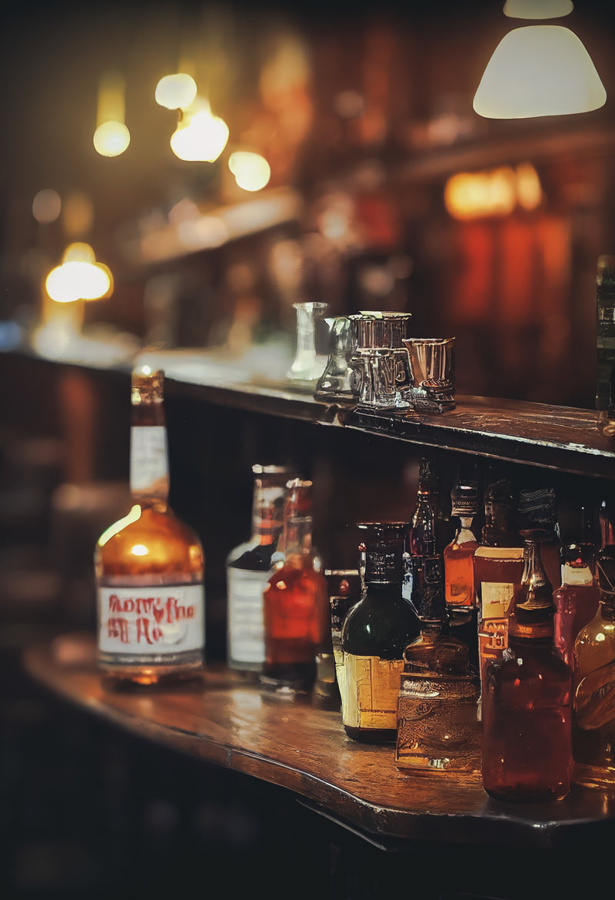

Selection
定番から個性派まで、香りで選べるウィスキー
スコッチ、アイリッシュ、ジャパニーズを中心に、その日の気分で選びたくなる構成を想定しています。

Concept
Selection
スコッチ、アイリッシュ、ジャパニーズを中心に、その日の気分で選びたくなる構成を想定しています。
Mood
落ち着いた照明や木の質感を感じる見せ方で、お店の温度をやわらかく伝えるイメージです。
Use Case
メニュー、営業時間、予約導線をひとまとめにして、お店のことをあとから見返しやすくします。
Visit
Open
金土は 26:00 まで。日曜定休。
Access
路地裏の小さなビル 2F を想定しています。
Seat
ひとり飲みも、2〜3人の来店も想定。
Reserve
電話、InstagramのDM、予約フォームなどを、バーの雰囲気を壊さない形でまとめる想定です。
※ このページは未完製作所の架空作例です。実在の店舗ではありません。